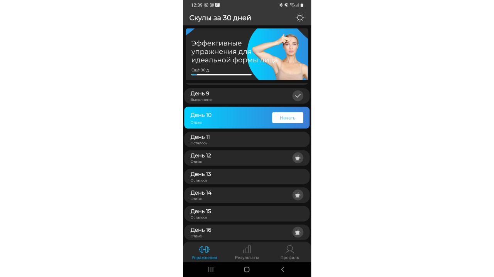

Додаток для тренувань

Я розробив додаток, що надає користувачам зручний інтерфейс для тренувань з розширеними функціями.
Вкладка з тренуваннями:
- Інтегровано одне тренування, яке складається з 8 вправ.
- Додано таймер для відстеження часу виконання кожної вправи.
- Після завершення тренування автоматично додається 1 день відпочинку з можливістю його скасування. Це дозволяє продовжити тренування без очікування.
- Цикл тренувань і днів відпочинку повторюється без кінця, забезпечуючи безперервний тренувальний процес.
Вкладка з графіками та результатами:
- Ця вкладка містить графіки та результати тренувань користувача.
- Додається кількість виконаних тренувань для кожної зони тіла або інших параметрів.
Вкладка з профілем:
- Користувач може вводити свої дані: ім'я, вік, фізичні параметри.
- Є можливість змінювати мову додатку.
- Функція поділитися додатком із друзями.
- Кнопки для оцінки додатку та зворотного зв'язку з розробником.
- Можливість купівлі ПРО-версії для повного відключення реклами.
Додаткові функції:
- Додаток містить вбудовану рекламу, яка зникає після придбання ПРО-версії.
- Озвучення вправ: диктор проговорює кожен рух під час тренувань.
- Можливість перемикання на темну тему для нічних тренувань.
Цей додаток надає користувачам можливість персоналізувати тренування, відслідковувати прогрес та покращити свої результати.
Назад